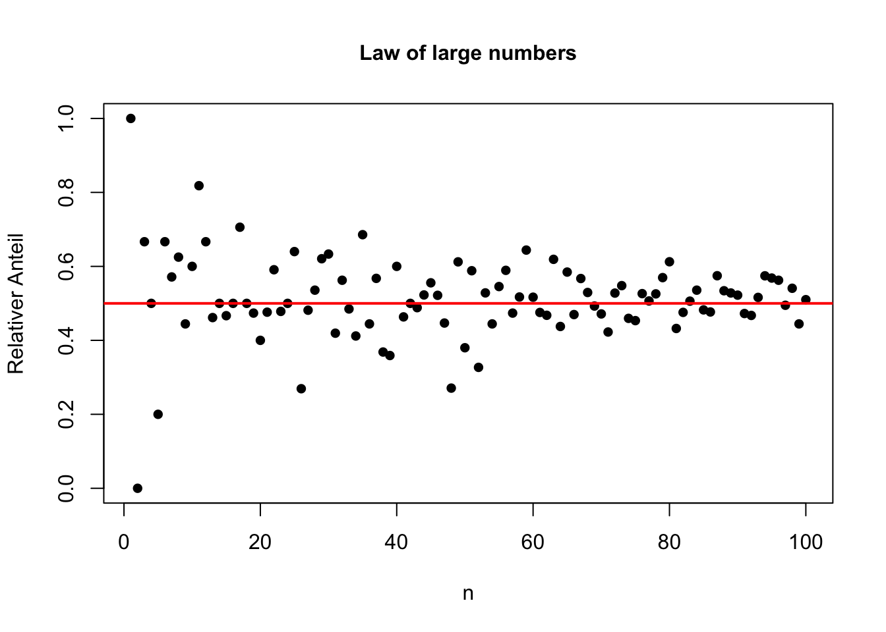
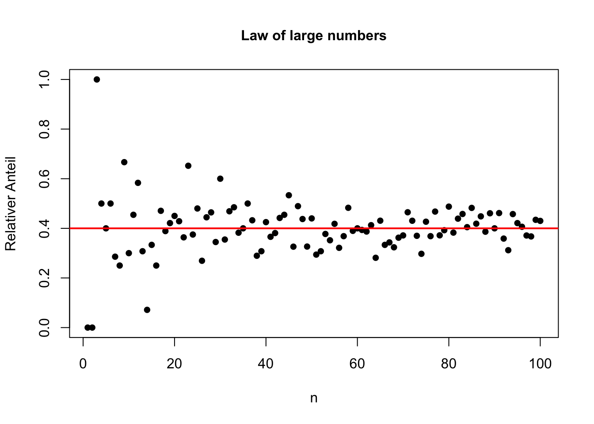
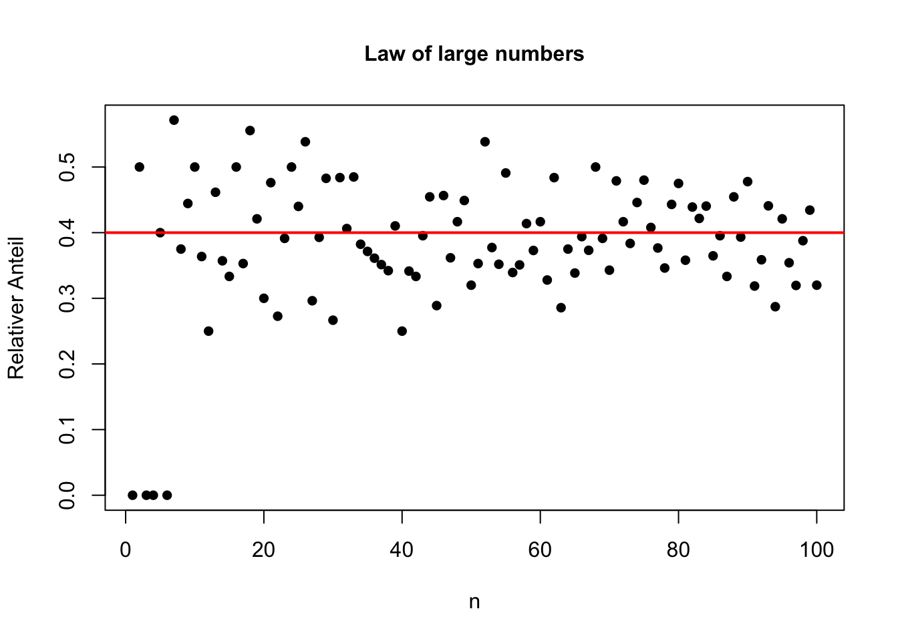

Chapter 9 Construction of functions
9.1 Simple functions
Functions allow us to bundle certain computing operations and then only call them when needed.
The basic syntax is
Call this function:
fun_name(<argument value(s)>)##Option 1, this calls the function directly.
d=fun_name(<argument value(s)>)###This assigns the value of the calculation inside the function to the object d.Functions return the last value to be evaluated, but it is also possible to return multiple values.
Function arguments can be entered with and without a default value.
As an example we will look at the variance (implemented in R).
\[s^2=\frac{1}{n-1}\sum_{i=1}^n(x_i-\bar{x})^2\]
For the sake of simplicity, we do not use the above-mentioned correction factor, but instead \(\frac{1}{n}\), i.e. we estimate
\[\tilde{s}^2=\frac{1}{n}\sum_{i=1}^n(x_i-\bar{x})^2=\frac{1}{n} \sum_{i=1}^nx_i^2+\bar{x}\]
vartilde=function(x)
{
mean(x^2)-mean(x)^2
}
x<-rnorm(100)
vartilde(x)#Call the self-written function vartilde and take as input x
var(x)## Functions with multiple arguments
We can also write functions with multiple arguments. As an example, we write the simulation of the law of large numbers from the last section as a function.
##Functions with multiple arguments
GGZGraph=function(N=100,pi=0.5)
{
RelAnteil=c()
for (n in 1:N)
{
Stichprobe=rbinom(n,1,pi)
RelAnteil[n]=mean(Stichprobe)
}
plot(1:N,RelAnteil,
main="Law of large numbers",
xlab="n",ylab="Relativer Anteil",pch=16,
cex.axis=1,cex.lab=1,cex.main=1)
abline(h=pi,lwd=2,col=2)
}
GGZGraph()


9.2 Functions with multiple output objects
If the function is to return an object at the end, which can also be assigned (list, vector, matrix), this object must be printed as an expression at the end of the function text (of the program). Suppose we want the previous simulation program to output all calculated relative frequencies, as well as the fraction of all sample means in a specified interval (a, b).
##Return multiple values
GGZSim=function(N=100,pi=0.5,a,b)
{
RelAnteil=c()
for (n in 1:N)
{
Stichprobe=rbinom(n,1,pi)
RelAnteil[n]=mean(Stichprobe)
}
IntervallAnt=sum(a<RelAnteil&RelAnteil<b)/N
list(RelAnteil,IntervallAnt)
}
ergebnis=GGZSim(100,pi=0.5,a=0.4,b=0.6)
ergebnis[[2]]
###Or###
GGZSim2=function(N=100,pi=0.5,a,b)
{
RelAnteil=c()
for (n in 1:N)
{
Stichprobe=rbinom(n,1,pi)
RelAnteil[n]=mean(Stichprobe)
}
IntervallAnt=sum(a<RelAnteil&RelAnteil<b)/N
return=list(RelAnteil=RelAnteil,IntervallAnt=IntervallAnt)
}
ergebnis2=GGZSim2(N=100,pi=0.5,a=0.4,0.6)
ergebnis2$IntervallAnt $Functions can also be arguments to a function itself.